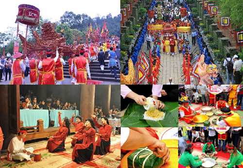
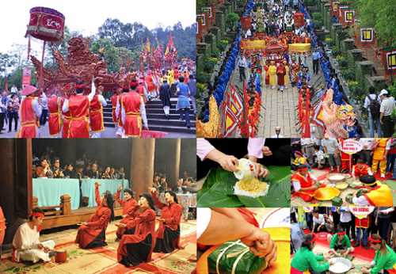

Văn hóa tiền sử; Văn hóa Văn Lang-ÂU lạc
Giai đoạn bản địa của văn hóa Việt Nam có thể tính từ khi con người bắt đầu có mặt trên lành thổ Việt Nam cho tới khoảng thế kỉ I trước công nguyên. Đây là một giai đoạn dài và có tính chất quyết định, là giai đoạn hình thành, phát triển và định vị của văn hóa Việt Nam. Giai đoạn này có thể được chia làm hai thời kì. Thời tiền sử từ buổi đẩu đến cuối thời đại đá mới vã thời sơ sử cách đây khoảng trên dưới 4000 năm.
Cư dân Văn Lang - Âu Lạc có cuộc sống vật chất và tinh thần khá phong phú. Nguồn lương thực chính là thóc gạo (gạo nếp và gạo tẻ), ngoài ra còn có khoai, sắn. Thức ăn có các loại cá, thịt, rau, củ. Cư dân Việt cổ có tập quán ở nhà sàn, nhuộm răng đen, ăn trầu, xăm mình ; cả nam lẫn nữ đều thích dùng đồ trang sức. Thường ngày, nữ mặc áo, váy ; nam đóng khố. Tín ngưỡng phổ biến của cư dân Văn Lang - Âu Lạc là sùng bái tự nhiên (thờ thần Mặt Trời, thần Sông, thần Núi và tục phồn thực). Tín ngưỡng thờ cúng tổ tiên, sùng kính các anh hùng, người có công với làng nước là nét đặc sắc của người Việt cổ. Dần dần hình thành một số tục lệ : cưới xin, ma chay ; lễ hội khá phổ biến, nhất là hội mùa.
Văn hóa thời chống Bắc thuộc; Văn hóa Đại Việt
Từ trong các xóm làng cổ; người Việt thời Bắc thuộc vẫn bảo tồn và phát huy cái vốn liếng văn hoá bản địa; nội sinh tích luỹ được qua hàng nghìn năm trước. Đành rằng trong suốt thời kì dài đằng đẵng đó; nhân dân ta phải sống cảnh “cá chậu chim lồng” trong một cơ cấu văn minh ngoại lai. Nhưng xã hội bao giờ cũng là xã hội của nhân dân; nhân dân vẫn; trong một môi trường sinh thái cụ thể và quen thuộc; không ngừng đấu tranh để phát triển sản xuất và văn hoá. Bất cứ lực lượng xã hội nào; bất cứ bạo lực chính trị nào cũng không ngăn cản được sự phát triển kinh tế; văn hoá tự mở lấy đường đi. Nét hằng xuyên của văn hoá Việt Nam là sự “không chối từ” việc tiếp thu; tiêu hoá và làm chủ những ảnh hưởng văn hoá của nước ngoài. Qua con đường giao lưu văn hoá; trào lưu di cư của một số sĩ phu và bần dân Hán tộc xuống Giao Chỉ; trên trường kì lịch sử chịu ảnh hưởng của một đế chế lớn và tạm thời (cái tạm thời nhiều thế kỉ của lịch sử!) nằm trong phạm vi của đế chế ấy; nhân dân ta đã vay mượn khá nhiều vốn liếng của nhân dân Trung Quốc về văn hoá vật chất cũng như về văn hoá tinh thần.
Văn hóa Đại Nam; Văn hóa hiện đại
Từ năm 1986, với Đại hội VI của Đảng, đất nước ta bước sang một thời kỳ lịch sử mới. Từ bỏ cơ chế tập trung quan liêu bao cấp để chuyển sang kinh tế thị trường theo định hướng XHCN, Đảng đã xác định phải xây dựng Nhà nước của dân, do dân, vì dân, phải tôn trọng nguyên tắc dân chủ, phải tiến hành công nghiệp hóa, hiện đại hóa đất nước. Cũng trong quá trình đó, Đảng khẳng định văn hóa là nền tảng tinh thần, mục tiêu và động lực của sự phát triển kinh tế - xã hội, phải đặt con người vào vị trí trung tâm của chiến lược kinh tế - xã hội. Từ các quan điểm đó càng đòi hỏi phải nhanh chóng hiện đại hóa văn hóa và xây dựng con người với tư cách là trung tâm của chiến lược phát triển, đồng thời là chủ thể phát triển trong điều kiện lịch sử mới, mà đặc trưng cơ bản là xu thế toàn cầu hóa và hội nhập quốc tế.
 
